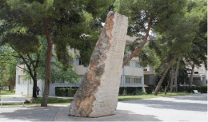
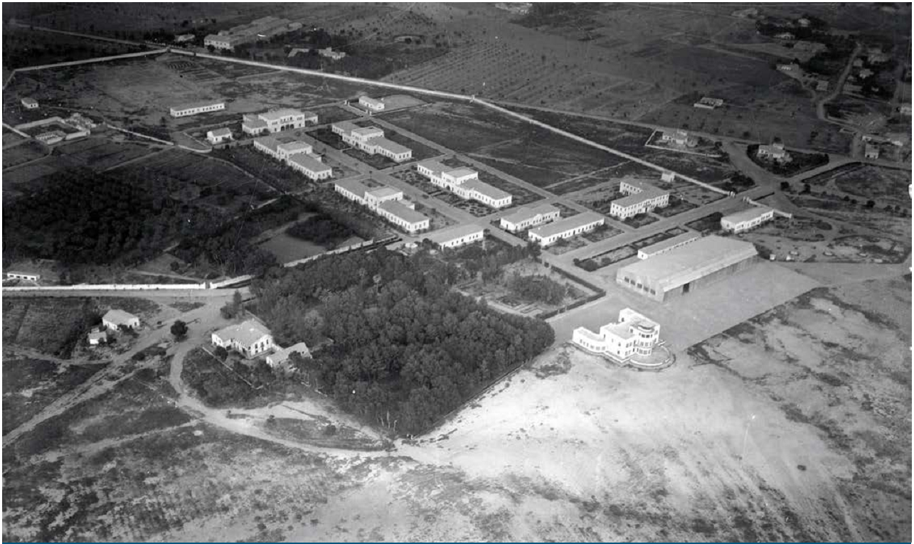

PARADA 1. FACULTAD DE FILOSOFÍA Y LETRAS. EDIFICIO II.
En este edificio se imparte el grado de Geografía y Ordenación del Territorio. También se ubican todos los despachos del profesorado de esta titulación.
Quizás te hagas estas dos preguntas:
1.¿Cuál fue el inicio de los estudios de Geografía en la UA?
En 1963 se creó el Patronato Alicantino de Estudios Superiores (PAES)
El 21 de octubre de 1968, el Centro de Estudios Universitarios (CEU) adscrito a la universidad de Valencia
El 4 de noviembre de 1968, se inauguraron oficialmente la División de Filosofía y Letras y la División de Ciencias. Los estudios de Letras se dividían en seis ramas: Básica, Lingüística, Historias, Arte y Arqueología, Filosofía y Psicología.
En marzo de 1975 se publicaba el decreto de adaptación por el que el CEU pasaba a ser el Colegio Universitario de Alicante (CUA)
El 23 de agosto de 1975 se creó la Facultad de Filosofía y Letras de Alicante: ramas de Historia y Filología
1976, decano el geógrafo Antonio Gil Olcina
1978, primer plan de estudios con asignatura de Geografía en el de Geografía e Historia. Se crean los primeros departamentos, entre los que se incluye el de Geografía.
Ley 29/1979, de 30 de octubre se crea la Universidad de Alicante
2.¿Cuáles son los estudios actuales de Geografía?
Desde el 2010, grado en Geografía y Ordenación del Territorio (https://web.ua.es/es/grados/grado-en-geografia-y-ordenacion-del-territorio/)
2 másteres oficiales:
Desarrollo Local e Innovación Territorial: https://web.ua.es/es/masteres/desarrollo-local-e-innovacion-territorial/
Planificación y Gestión de Riesgos Naturales (https://web.ua.es/es/masteres/planificacion-y-gestion-de-riesgos-naturales/)
1 programa de doctorado:
Filosofía y Letras (https://cvnet.cpd.ua.es/webcvnet/planestudio/planestudiond.aspx?plan=E002&lengua=C#)
Algunas cifras de interés en la UA. Una de las disciplinas de la Geografía es la que trabaja datos de población y realiza estadísticas y gráficos con ellos, se trata de la Demografía. Con estos datos podríamos elaborar gráficas de barras, circulares, lineales, etc con el fin de representar y analizar la información que nos aporta:
Alumnado en la UA (2020): 22.144 estudiantes (12.958 mujeres y 9.186 hombres)
Alumnado en la Facultad (2020): 3.094 (1.966 mujeres y 1.128 hombres)
Alumnado en GOT (2020): 87 (24 mujeres y 63 hombres)
PDI (2020): 2.647 (1.074 mujeres y 1.573 hombres)
PAS (2020): 1.400 (804 mujeres y 596 hombres)
Otra de las ramas es la Biogeografía o estudio de las especies vegetales y animales, y los factores ambientales que explican su distribución en el planeta.
Justo a la entrada del edificio tienes un arbusto de más de 2 metros de alto. Se trata de la adelfa, baladre o Nerium oleander http://herbarivirtual.uib.es/ca/comunitat-valenciana/895/especie/nerium-oleander-l- . Es una especie característica de las ramblas y barrancos mediterráneos aunque también se ha usado mucho en jardinería y para las medianas de las autovía. Pero, cuidado, es altamente tóxica.
En el edificio de enfrente observarás unas palmeras. Son palmitos (Chamaerops humilis), especie termófila característica de la maquia litoral. Las hojas se utilizaban para tejer y hacer cestas de gran resistencia (encontrados restos en yacimientos romanos), los frutos son comestibles y, en la actualidad, nos comemos su tronco en ensaladas. http://herbarivirtual.uib.es/ca/general/365/especie/chamaerops-humilis-l-
Curiosidad: fíjate en los escalones del edificio (la Geomorfología es otra de las disciplinas en la que se estudia el comportamiento o respuesta de las rocas a las fuerzas tectónicas y erosivas del planeta)
Caliza nummulítica. Roca sedimentaria, caliza compuesta por esqueletos o caparazones fósiles de Nummulites striatus (Eoceno). Denominación de su aprovechamiento industrial: “crema marfil”. Muy cerca verás un monolito, es el mismo tipo de roca. Se trata de una donación realizada por el ayuntamiento de Pinoso en 1993 como conmemoración a la creación de la Embajada de Pinoso en la UA, piedra extraída de las canteras del Monte Coto, en el cual también hay declarado un Paraje Natural Municipal (las temáticas sobre gestión y protección también son abordadas desde la Geografía)


Más información en:
https://web.ua.es/es/universidad-alicante/antecedentes-y-evolucion.html
https://web.ua.es/es/e-pesedua/introduccion/piedra-natural-en-alicante.html
https://parajesnaturales.diputacionalicante.es/es/monte-coto-pinoso/